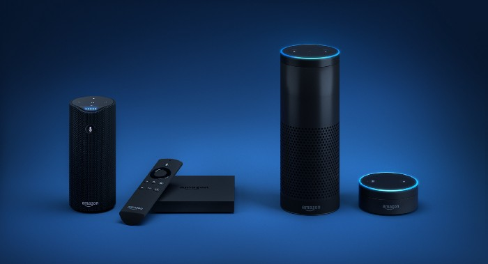

Amazon Alexa inside Rental Cars
Back in Jan-Mar ’18, we ran the much audacious effort of providing the luxury of Amazon Alexa to a rental car user. We learned much from the pilot. So very much.
The Interaction
Just 2 hours before the booking, the user gets an SMS and an email which says that the car allocated to them is Alexa-enabled.
When they are physically in front of the car: They see a sticker ‘Alexa-enabled’ on the windshield of the car. They also find a specialized mentioning ‘Alexa-enabled’. By this time, we have already gotten their attention or in some cases, curiosity.
After booking the car, the user will unlock the car, inspect it, and as soon as put the key in the ignition fob, Echo Dot stuck on the dashboard starts to boot up. It takes about a min to do, it will automatically latch onto the wifi inside the car (we added a wifi hotspot inside the car) and is ready to work as it is already configured to the Zoomcar account.
The many use-cases of Alexa
Alexa ecosystem
1. They can play Music.
Alexa, play Skyfall
1. 2. They can engage in a Game.
Alexa, open Magic Door
3. They can ask about Weather
Alexa, what is the weather like in Bangalore?
4. Or just ask random questions
Alexa, tell me more about April Fool’s day.
Alexa, who is Donald Trump?

Zoomcar Ecosystem
We want Alexa to replace App and IVR for the queries and actions users perform while they are using the car.
1. They can ask questions about their booking.
Alexa, ask Zoomcar what is my remaining time?
Alexa, ask Zoomcar what is my dropoff location?
2. Booking related actions
Alexa, ask Zoomcar to shorten my booking?
Alexa, ask Zoomcar to extend my booking?
Alexa, ask Zoomcar to contact me.
3. Users can ask for items on the Map
Alexa, ask Zoomcar for the nearest gas station.
Alexa, ask Zoomcar for the nearest restaurant?
Alexa, ask Zoomcar how far is Bangalore?
Zoomcar Skill Development
Contextualization
When user from an Alexa-enabled car interacts with Zoomcar skill, our skill should be able to identify the user from the active booking. Which in turn will be done by identifying device to car to active booking mapping.

Intent to Utterance Mapping
A skill (can be understood as an App) have many intents (functions) that are invoked by utterances (Voice trigger by the user), these intents are supported by slots (parameters in functions).
“Alexa, ask Zoomcar to extend my booking by 2 hours”
‘Zoomcar’ is the skill which is to be invoked.
‘Extend my booking’ is the utterance which invokes the ‘Extend Booking’ intent.
And ‘2 hours’ is the slot for this intent, this is the required parameter for completing the action for ‘Extend Booking’ intent.
Queries
Developing queries were easy for the skill. As they involved a direct response for each intent. The interaction with our backend system was one-way.
Alexa, open Zoomcar
Alexa, ask Zoomcar what is my remaining time?
Alexa, ask Zoomcar what is my dropoff location?
Main Features
1. Extension of Booking Time
Through Alexa, users would be able to perform extension ≤ 4 hours (4 hours in total). We won’t be taking any payment over Alexa as of now and would be treating this by creating an outstanding. If the extension is asked for more than 4 hours, the user is directed to Zoomcar App to perform it.
2. Contacting the Call Centre
Through Alexa, users would be able to reach CEC without waiting on the queue. User will ask for a callback, we will ticket a create for the same in the IVR. Our CEC agents would reach the user on his/her registered mobile number.
3. Map Search
While driving a car, the ability for searching for a petrol bunk, restaurant or an ATM might be useful to the customer. We have the user’s current location from a GPS device inside every car.
User asks Alexa for the nearest petrol pump/ATM/etc, Alexa replies back with the name of the nearest ‘place’ with the distance and approximate time taken. Through backend we also send across the link of the ‘place’ via SMS to the mobile phone. Without, Alexa voice service, the functionality of notification isn’t available and thus no way to give step by step feedback to the user.
Result filtering for Petrol Pump, ATM and Pharmacy:
Precedence will only be based on distance.
Only ‘Open Now’ results should be delivered to the user.
Result filtering for restaurants:
A little more critical since restaurant experience varies a lot and the closest one might not be the best experience.
Top 3 rated within 5 kms -> Else top results from 5–15 kms to fill the list for 3 places.
Only ‘Open Now’ results should be delivered to the user.
Hardware Design

The Arrangement
Car battery provides charging to the Echo Dot, Wifi Hotspot, and Alexa hub when the car is in Ignition ON state. Echo Dot is harnessed on the dashboard of the car using a double-sided 3M tape, a power and aux cable runs into the Echo Dot. The power cable connects to the car battery and the AUX cable connects to the Alexa Hub.
Audio Switching
Alexa Hub is for detecting the signal in Echo Dot, basis the presence of the signal it gives the master control to the Echo Dot. This implies if there is music playing from the ‘Entertainment System’ of the car into ‘Speaker System’ and the user triggers an audio input from Alexa, Echo Dot will take the master control and the audio from Echo Dot will instead start playing in the car speakers.
Offline Visibility
We wanted the user to know that there is a new device inside the car to nudge the user to use it. For this, we had a customised keychain, a pamphlet hanging by the rear-view mirror and a stick-on the headrest. The pamphlet and the stick-on contained utterances for some of the top use cases. We used the inspiration from the box of Amazon Echo Dot, took the use-cases relevant inside the car and added Zoomcar specific use-cases. We used ‘green’ font color for mentioning Zoomcar use-cases which goes in sync with Zoomcar’s brand color.
Keychain
Mirror Hanging
Headrest Sticker (for rear seat passengers)
Experiment Results
PS: I was the Product Manager who led the experiment for Alexa integration in Zoomcar. Irrespective of getting positive results from it, we didn’t launch the Product from the experiment because of the high implementation cost.